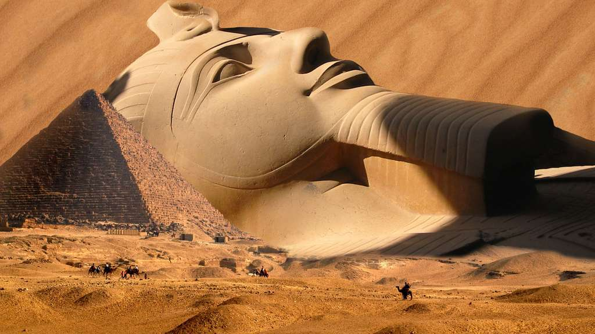
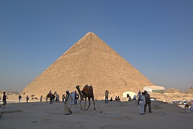

Quel étrange spectacle que celui de ces impressionnantes et énigmatiques pyramides que l'on trouve sur les plateaux calcaires de la rive gauche du Nil, du côté du Caire... Que sont-elles ? Quels étaient leurs buts, leurs rôles ? Et surtout comment furent-elles construites, elles qui paraissent si grandes, si massives ?
Quand on parle des pyramides d'Egypte, on a immédiatement l'image des trois pyramides du plateau de Gizeh, au centre de la nécropole du même nom. Parfois, on pense à la fameuse pyramide de Djéser, une pyramide originale par le fait qu'elle est à degrés, c'est à dire faites de plusieurs pyramides tronquées superposées. Mais si ce sont les seules images que l'on a de ces pyramides, c'est bien par déficit de popularité des autres sites, bien moins connus que Gizeh ou Saqqarah. Grave erreur que de ne pas s'intéresser aux autres pyramides d'Egypte, car elles sont nombreuses, disséminées sur un territoire relativement restreint, et surtout elles ont été construites durant une période précise de l'histoire de l'Egypte, témoignant ainsi de la grandeur de la civilisation égyptienne antique.
Que dire de plus, avant de se plonger dans le détail de ces pyramides ? Peut-être que celle de Khéops, géante parmi les géantes, est aussi l'une des sept merveilles du monde, et que c'est la seule à exister encore de nos jours, alors que c'est la plus ancienne de toute la liste, et de loin. Un gage de solidité, probablement...
Les pyramides montrent, pour leur époque, le grand savoir des ingénieurs égyptiens capables de faire s'élever de tels monuments avec des moyens très rudimentaires. Les méthodes de construction des pyramides égyptiennes demeurent incertaines. Les données documentaires3 et archéologiques sur ces chantiers gigantesques restent très fragmentaires, tandis que les théories fleurissent et se multiplient, surtout depuis la fin du xixe siècle. Des centaines d'ouvrages consacrés à la pyramide de Khéops prétendent avoir enfin réussi à percer le mystère qui entoure sa construction. Les théories se focalisent généralement sur la Grande pyramide, partant du principe qu'une méthode pouvant expliquer sa construction peut également s'appliquer à toutes les autres pyramides d'Égypte. En fait, rien ne permet d'affirmer que les mêmes méthodes aient été appliquées à toutes les pyramides, de tous types, toutes tailles et toutes époques.

Les Pharaons
Difficile de connaître la vie des pharaons. Si on a une idée assez précise de leurs biographies quand ils ont régné dans le nouvel empire, c'est beaucoup plus difficile d'avoir des informations sur les décisions prises par ceux de l'ancien empire.
Les traces de leurs activités se retrouvent essentiellement dans les textes, les gravures que l'on retrouve sur les principaux sites archéologiques. Elles nous permettent d'apprendre les orientations générales de leurs politiques, mais ça reste très succinct.
Si l'on devait résumer l'histoire de l'Egypte antique en quelques mots, on pourrait simplement dire qu'elle se compose de 3 empires (ancien, moyen et nouveau) séparés par des périodes intermédiaires durant lesquelles l'unité de la civilisation s'est perdue. La période des pyramides s'est déroulée durant l'ancien empire, qui va de -3150 à -2181. Trois millénaires avant notre ère !
Elle commence avec l'obtention d'une unité territoriale et une stabilité économique permettant le déploiement d'une administration tentaculaire. La population vivant sur les rives du Nil étant unifiée, c'est tout naturellement que de nombreux domaines furent explorés, puis poussés. Ainsi la sculpture commença à produire des pièces d'une grande précision, l'écriture se normalisa et l'architecture se développa. Ce sont les progrès techniques de ce domaine là qui permirent l'édification de monuments de plus en plus complexes.
Si la première pyramide est sortie de terre par volonté d'améliorer le tombeau du pharaon Djéser, ses successeurs s'emploieront à améliorer les techniques mises en place pour parvenir à des pyramides à faces lisses. Malheureusement ils n'ont pas réussi du premier coup : Certaines des pyramides, les plus anciennes, sont des essais ratés. La forme originale de la pyramide rhomboïdale en est une preuve... Toujours est-il qu'à partir du moment où ils réussirent à en faire une, la technique fut réutilisée et perfectionnée, aboutissant à l'âge d'or des pyramides, celles des "pyramides géantes".
Puis il y eu un retour à des pyramides de taille plus modestes, avant d'entrer dans une période de stabilisation de l'architecture funéraire qui abouti à la reproduction d'un même schéma, avec peu de variantes d'un pharaon à l'autre. Enfin arriva la période des pyramides à texte, ce sont des pyramides dans lesquelles des textes furent écrits pour décrire ce qui doit se passer dans le royaume des morts. Et ce fut la fin de la période des pyramides, avant la fin de l'ancien empire. Certains pharaons des XIIe et XIIIe dynasties, puis des XVIIe et XVIIIe dynasties, reprirent la tradition de se faire enterrer sous une pyramide, mais il ne faut voir là qu'un rebond de l'histoire dû à la volonté de mettre les pharaons concernés dans la descendance des anciens égyptiens.

Pyramide de Khéops
La grande pyramide de Khéops est sans nul doute la pyramide la plus célèbre. Formant une pyramide carrée de 137 m de hauteur (initialement de 146 m, c'est-à-dire plus haute que la basilique Saint-Pierre à Rome (139 m)), elle fut édifiée il y a plus de 4500 ans, sous la IVe dynastie, au centre d'un vaste complexe funéraire se situant à Gizeh. Elle est la seule des Sept Merveilles du monde de l'Antiquité à avoir survécu.
Durant des millénaires, elle fut la construction humaine de tous les records, la plus haute, la plus volumineuse et la plus massive. Véritable symbole de tout un pays, ce monument est depuis plus de 4 500 ans scruté et étudié sans relâche. Le tombeau, véritable chef-d'œuvre de l'Ancien Empire, représente la concentration et l'aboutissement de toutes les techniques architecturales mises au point depuis la création de l'architecture monumentale en pierre de taille par Imhotep pour la pyramide de son souverain Djéser. Toutefois, les nombreuses particularités architectoniques et les exploits atteints en font une pyramide à part qui ne cesse de captiver l'imagination.
{kind=link}